벤츠 GLE300d 검정입니다.
입고했을 때 스월이 꽤 빽빽했던 차입니다.
부산 광택 작업으로 본넷과 리어 펜더를 정리한 기록입니다.
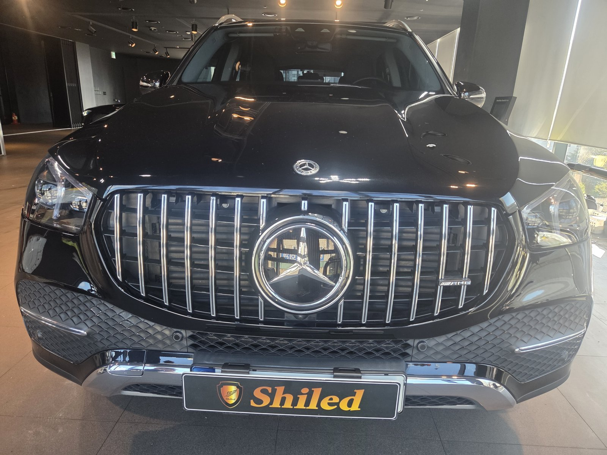
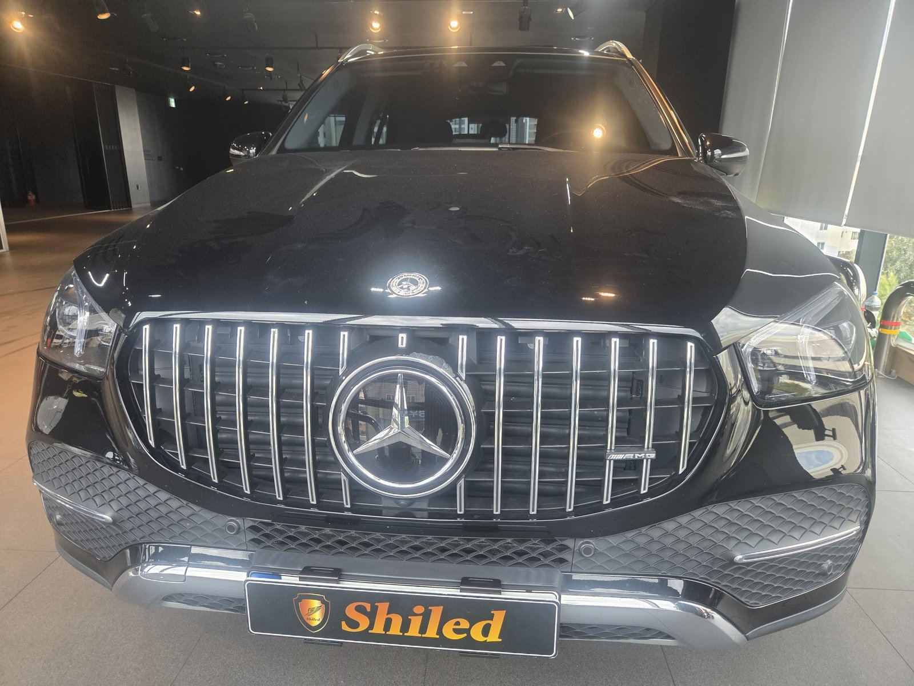
GLE300d는 상태가 어땠나요?
조명을 대자 거미줄 같은 스월이 바로 드러났습니다.
본넷 헤드램프 위쪽, 리어 펜더, 테일게이트가 특히 심했습니다.
SUV는 차체가 높아 위쪽을 닦을 때 힘이 고르게 안 들어갑니다.
그래서 특정 부위에 자국이 몰리는 경우가 많습니다.
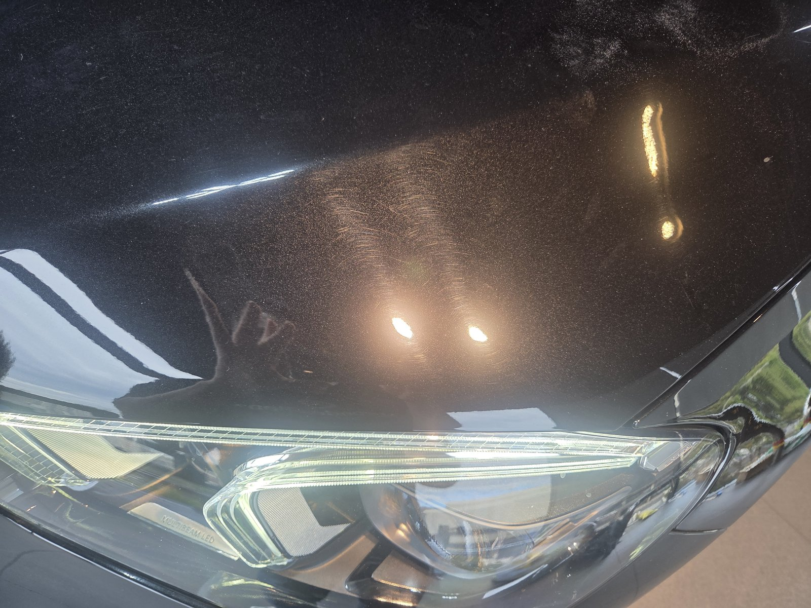
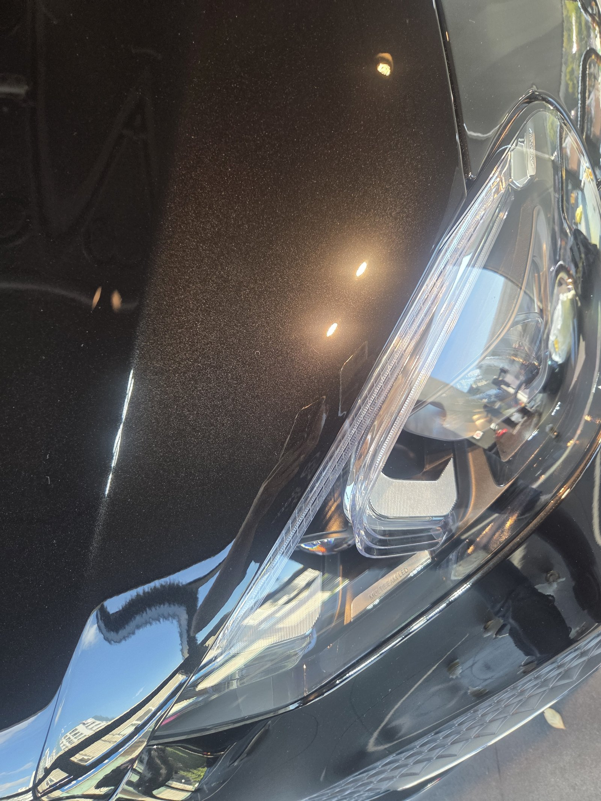
본넷 앞쪽 — 헤드램프 위로 번지던 스월이 정리됐습니다
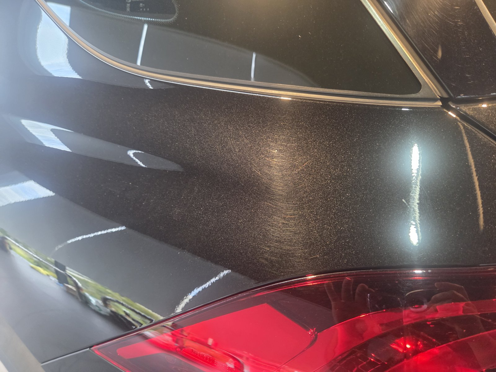
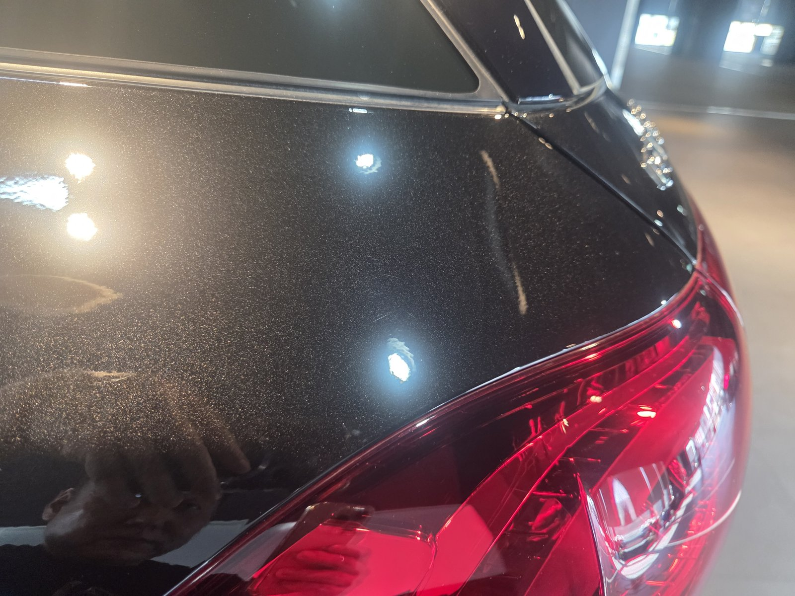
리어 펜더 — 이 차에서 스월이 가장 빽빽했던 자리입니다
부산 광택, GLE는 어떻게 진행했나요?
① 세차와 철분 제거로 표면을 비우고,
② 조명으로 부위별 스월 밀도를 확인한 뒤,
③ 심한 부위는 컴파운드 단계를 한 번 더 거쳐 폴리싱으로 마감했습니다.
같은 차라도 부위마다 상태가 다르면 단계도 달라야 합니다.
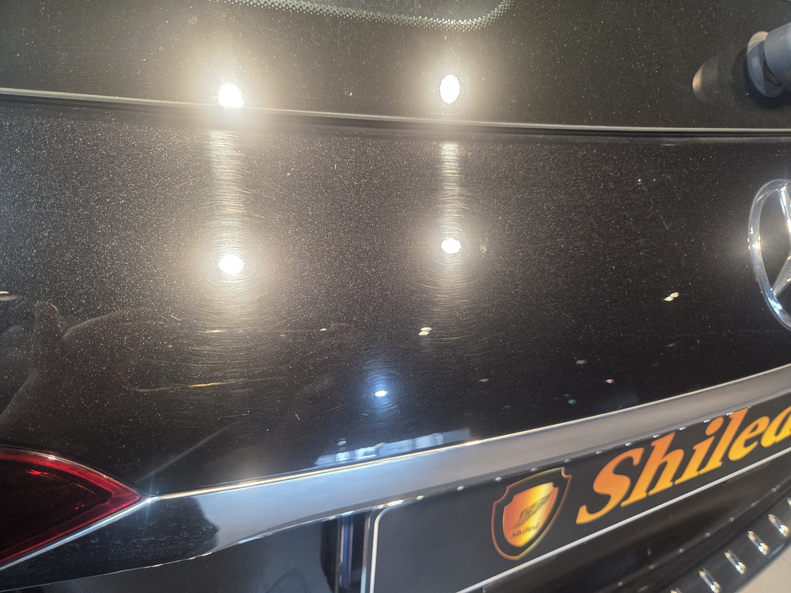
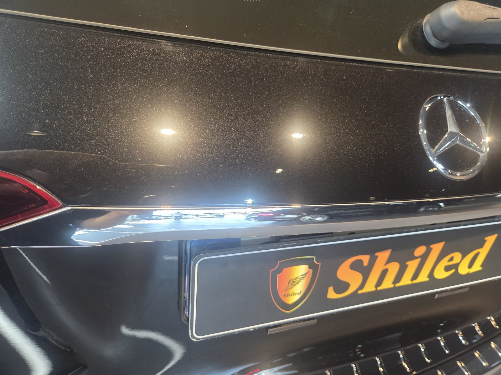
테일게이트 — 엠블럼 주변까지 고르게 정리했습니다
기술자의 팁
SUV 루프와 본넷 앞쪽은 손이 잘 안 닿아 세차할 때 타월을 세게 밀게 됩니다. 발판을 쓰거나 손잡이가 긴 세차 도구로 힘을 빼고 닦는 것이 스월을 줄이는 방법입니다.
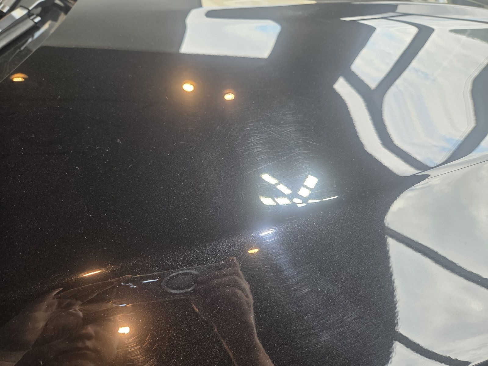
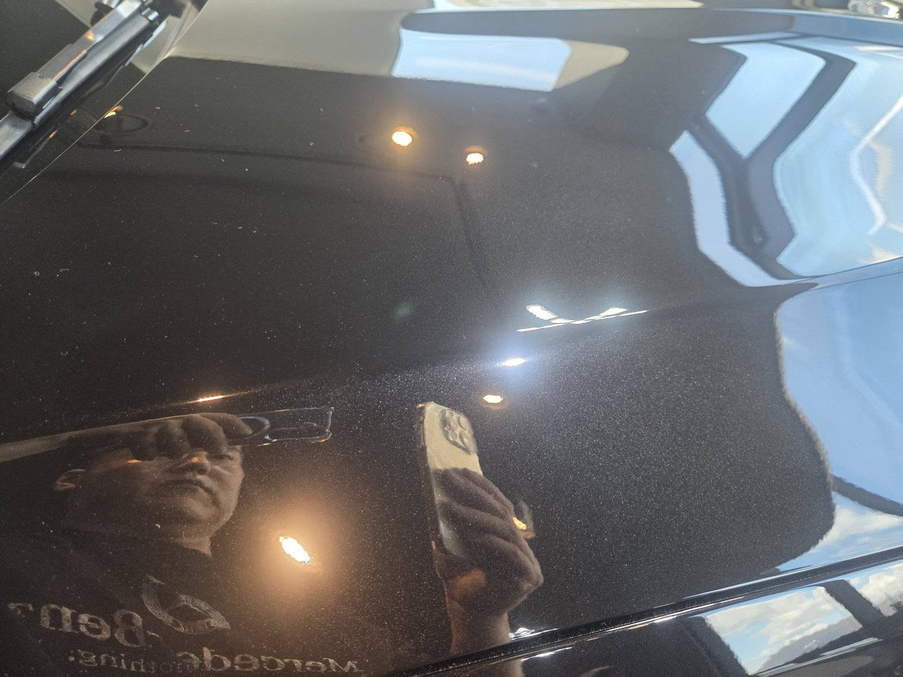
리어 쿼터 — 비치는 풍경의 윤곽이 또렷해졌습니다
광택 후 GLE300d는 어떻게 달라졌나요?
번져 보이던 조명이 점으로 맺힙니다.
검정이 다시 깊어 보입니다.
이번 부산 광택의 결과입니다.
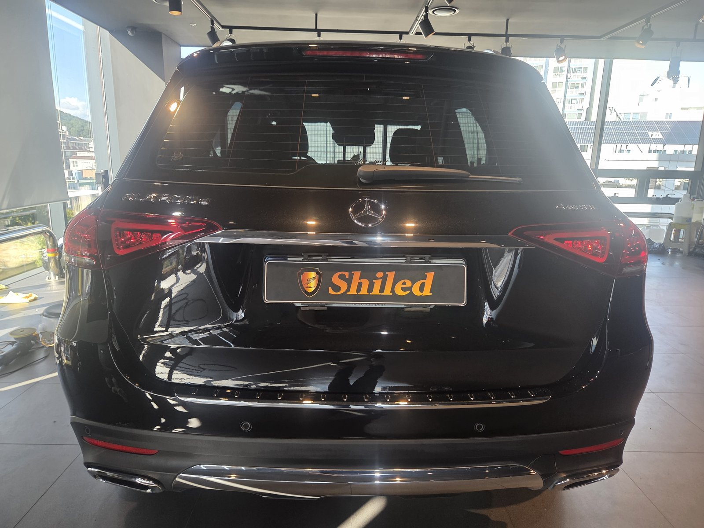
자주 묻는 질문
Q. SUV는 왜 특정 부위에 스월이 몰리나요?
A. 차체가 높아 루프와 본넷 앞쪽, 테일게이트 위쪽을 닦을 때 힘 조절이 어렵기 때문입니다. 그 자리만 유독 자국이 빽빽해지는 경우가 많습니다.
Q. 스월이 심하면 광택을 더 깊게 하나요?
A. 부위별로 단계를 다르게 가져갑니다. 이 차도 리어 펜더처럼 심한 부위는 컴파운드 단계를 한 번 더 거쳤고, 나머지는 필요한 만큼만 다듬었습니다.
Q. 광택 후 코팅은 꼭 해야 하나요?
A. 필수는 아니지만 권해 드립니다. 광택 직후 도장면은 보호막이 없는 상태라 코팅을 올리면 정리된 상태를 더 오래 유지할 수 있습니다.
Q. 광택은 얼마나 자주 받아야 하나요?
A. 정해진 주기는 없습니다. 세차 습관과 보관 환경에 따라 잔기스가 쌓이는 속도가 다르기 때문입니다. 강한 조명 아래서 도장면을 봤을 때 자국이 눈에 띈다면 그때가 적기입니다.
Q. 쉴드광택 위치와 예약은 어떻게 하나요?
A. 부산 남구 유엔로220 1F 쉴드광택입니다. 예약·상담은 010-3384-1850, 대표 최한중이 직접 상담하고 책임 시공합니다.
빽빽한 스월, 부위별로 단계를 나눠 정리해 드립니다.
제품을 직접 만드는 사람이 직접 시공합니다.
부산에서 광택을 고민 중이시면 편하게 연락 주십시오.
어떤 차를 타냐보다 어떻게 타냐가 중요합니다~!
시공 중에는 전화를 받지 못할 때가 많습니다.
카카오톡으로 차종과 원하시는 시공을 남겨주시면 확인 후 답변드립니다.
쉴드광택 · 부산 남구 유엔로220 1F · 대표 최한중